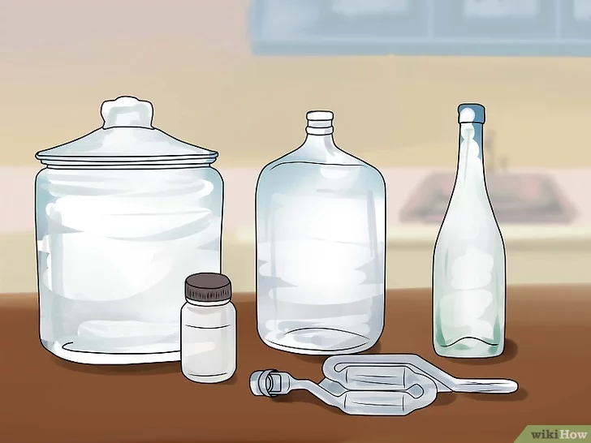
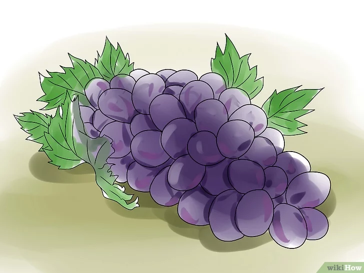
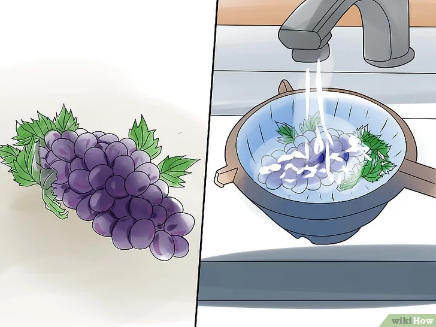

1-Malzemeleri ve gereçleri hazırlama

Gereçleri topla. Şarap için gerekli olan malzemelere ek olarak, şarabının böcek ve bakterilerden etkilenmeden doğru şekilde yıllandığından emin olmak için birkaç temel araca da ihtiyacın vardır. Evde şarap yapmak pahalı değildir, yani özel araçlara çok fazla para saçmak zorunda kalmazsın. Sadece aşağıdaki malzemelere ihtiyacın olacak:
- Yaklaşık 7.6 litrelik bir toprak ya da cam kap (bunları genellikle vintage ya da ikinci el dükkanlarda bulabilirsin, öte yandan, dikkat et çünkü birçok toprak kabın daha önce turşu yapımında kullanılmış olabilir ve şarabını bozabilir.)
- Yaklaşık 3.8 litrelik bir damacana (küçük ağızlı bir cam kap)
- Hava kilidi
- Sifonlama için kullanılacak ince bir plastik tüp
- Mantarlı ya da vidalı kapaklı temiz şarap şişeleri
- Potasyum Metabisülfit (campden tablet), (tercihe bağlı)
2-Meyveni seç

Şarap, en yaygın seçenek olan üzümden, dut, çilek gibi meyvelere kadar birçok meyveden yapılabilir. Olgun bir meyve seç. Kimyasallarla işlenmemiş organik bir meyve seçmek iyidir, ne de olsa bu kimyasalların şarabında bulunmasını istemezsin. Eğer mümkünse, kendi topladığın ya da organik bir çiftlikten aldığın bir meyve kullan. Bazı işletmeler, evde şarap yapanlara özel şarap üzümleri de sağlamaktır (örneğin, Tekirdağ bölgesindeki şarap imalathaneleri ve üzüm bağları). Bunlar özellikle de bağlara yakın yaşamıyorsan iyi olacaktır.
3-Meyveyi yıka

Çekirdek ve yaprakları temizle ve meyvenin üzerinde herhangi bir pislik kalmadığına emin ol. Meyveyi iyice kurut ve kabın içine koy. Meyveyi ezmeden önce soyabilirsin ama şarabın tadının büyük bir kısmı kabuğundan geldiğini unutma. Meyveyi soymak, daha kolay içimli bir şarap elde etmeni sağlayacaktır.
- Şarap yapan insanlardan bazıları ezmeden önce meyveyi yıkamamayı seçmekte. Meyvenin üzerinde doğal olarak maya bulunduğu için, yalnızca meyvenin kabuğundaki maya ve havayı kullanarak şarap yapmak mümkün. Öte yandan, meyveyi yıkamak ve ne kadar maya ekleyeceğini kontrol edebilmek, şarabın tadının zevkine uygun olmasını sağlar; yabani mayaya izin vermek kötü tatlar oluşmasına sebep olabilir. Eğer deney yapmak istiyorsan, biri kontrollü biri de yabani maya olmak üzere iki ayrı şarap yaparak hangisini daha çok sevdiğine karar verebilirsin.